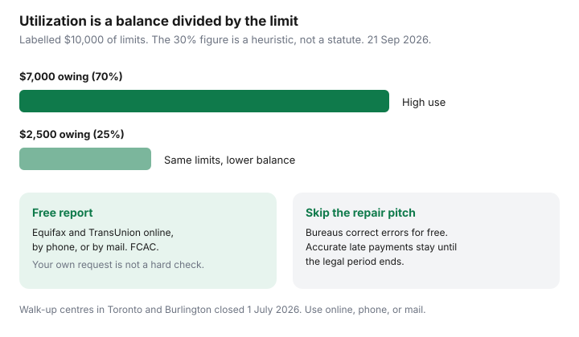

Personal Finance · Canada
How to Check Your Credit Score Free in Canada and Fix Errors That Cost You Money
Canadians pay for score apps while an old cellphone account, still open at $40, quietly changes what a lender charges. The report is free. The dispute is free. A company that promises to erase accurate late payments is selling something the bureaus say they will not do. This page is the FCAC path: get both files, read payment history and utilization, dispute what is wrong, and check again before you apply for anything large.
Disclosure: Education only. Not a credit-score service and not a lender. We do not recommend credit-repair firms, payday loans, or debt-settlement offers. Free report paths are government and bureau services. A paid monitoring subscription is optional and is not required to dispute an error.
Key takeaways
- Order the free Equifax credit report and the free TransUnion consumer disclosure. FCAC: your own request does not change the score.
- Equifax’s score is available online free on FCAC’s description. Québec residents can see a TransUnion score on the consumer disclosure. Do not confuse that with a $24.95-a-month monitor.
- Work the levers you control: pay on time, and lower revolving balances. A labelled move from 70% to 25% utilization is the picture. “Under 30%” is a heuristic, not a law.
- Dispute errors with both bureaus yourself. TransUnion says a paid repair firm gets the same outcome. Accurate negatives stay until the legal clock runs out.
- Look twice a year, and pull both files in the same month before a big application. Walk-up counters in Toronto and Burlington closed 1 July 2026.
FCAC paths to Equifax and TransUnion reports without paying for score apps
The Financial Consumer Agency of Canada says you may access your credit report online for free at both Equifax and TransUnion, with monthly updates, and that you can also request it by mail or by phone. Phone numbers FCAC lists: Equifax 1-800-465-7166, TransUnion 1-800-663-9980. Mail requests need the bureau’s form and copies of two pieces of ID. Equifax says its Toronto walk-up centre at 5700 Yonge Street closed on 1 July 2026. TransUnion says in-person service at its Burlington office ended the same day. Online, phone, and mail are the remaining doors.
Score versus report is where the upsell lives. FCAC: the Equifax score is accessible online for free and updates monthly; if you live in Québec you may also access your TransUnion score online for free. TransUnion’s consumer-disclosure explainer says Québec residents see the score and the factors on the disclosure because of the province’s Credit Assessment Agents Act. TransUnion’s marketing homepage, in the same season, also says Québec and Ontario residents are entitled to the score and factors on the consumer disclosure, and separately sells a monitoring subscription at $24.95 a month plus tax that is not the free disclosure. Read the screen that asks for a card. If the button is “start my free trial” of a monitor, you are not on the statutory disclosure path.

What actually moves scores: payment history and utilization
Scoring models are proprietary. The parts a household can change on purpose are boring: paying at least the minimum by the due date, and using less of the revolving limits that report. A labelled example, not a score prediction: $7,000 owing on $10,000 of combined limits is 70%. The same limits with $2,500 owing is 25%. People repeat “stay under 30%” as if it were a regulation. It is a planning heuristic. Lower is generally treated more gently; the statute you can rely on is the one that lets you see the file, not a magic percentage.
The way to lower the ratio is to lower the balance, which is the payoff work in snowball versus avalanche, or to finish a consolidation without refilling the cards. Asking for a higher limit can change the ratio and can also be a hard inquiry. Closing an old card can shrink the denominator and make utilization worse. If the card has an annual fee you do not want, that is a money decision; make it after you know the utilization math, not because a tidier wallet feels virtuous.
| Revolving balances | Limits | Utilization |
|---|---|---|
| $7,000 | $10,000 | 70% |
| $2,500 | $10,000 | 25% |
| $2,500 after you close a $4,000 card | $6,000 | about 42% |
Dispute workflow for errors and closed accounts that still show open
FCAC: you have the right to dispute information you believe is wrong, and the bureaus must correct errors for free. They check with the lender that reported the item. If the lender says it is accurate, it stays, and you can ask to add a short statement. Equifax says you can dispute online or by mail at no charge, and describes about 15–20 days for an online dispute and about 20–25 days for mail, then a result letter. If an online dispute does not resolve it, Equifax says you may add a statement of up to 800 characters. TransUnion’s dispute page says the investigation is free and that hiring a credit-repair company does not change the outcome or the treatment you get.
Work both bureaus. They do not hold identical files. A closed card that still shows a balance, or an account you never opened, is worth a dispute with the bureau and a note to the lender. A closed card that correctly shows a $0 balance and an old limit is not automatically an error. Fraud is a different track: contact the lender, ask both bureaus about a fraud alert, and report it through the National Fraud Reporting System, which is the sequence FCAC describes. The federal government does not regulate the bureaus. If you are treated unfairly, FCAC points you to your provincial or territorial consumer affairs office.
Soft vs hard checks when shopping rates
Ordering your own report is not a hard check. FCAC says it has no effect on the score. Applying for a card, a loan, or a line of credit generally is a hard inquiry, and several of them in a short time tell a story. How a bureau groups mortgage or auto rate-shopping into one inquiry is a bureau rule, not something to memorize from a U.S. article. Confirm it on the bureau’s own help page if you are about to shop a rate, and do not open five cards “to compare welcome offers” in the same month you need a mortgage. A line-of-credit application is one of those hard checks; plan it, then check the file again after it posts.
How score hygiene protects loan pricing over time
The dollars show up when you actually borrow: a card you revolve, a car loan, a line, a mortgage. An error that shows a limit as maxed, or a paid collection as open, can change an approval or a rate. Fix the error before you apply, not after the decline. Some insurance markets also use credit information where provincial rules allow it. That is a provincial insurance question, not a reason to buy a score subscription, and it is outside the depth of this page. What belongs here is the borrowing price you can influence by paying on time and by disputing what is false.
Accurate late payments do not vanish because you paid a firm or because you later caught up. FCAC’s older public guide, still the right warning, says negative information is removed after the legal period — often a maximum of six or seven years depending on the item and the province — and that repair firms cannot delete it early. Pay the debt because you owe it (rate-gap order if a card is the expensive one). Do not pay a stranger to argue with a fact.
Cadence: review twice a year or before any big application
FCAC suggests getting one bureau, then the other about six months later, so a problem has a chance to show up in between. Do that as the ordinary cadence. In the month before a mortgage, a car, or a line of credit, order both, because you do not know which file the lender will pull. Put the dates next to the CRA-account check so mail and credit are one sitting, not two moods. If a data breach notice offers free monitoring from the institution that was breached, that offer can be worth taking. A random text promising a free score is not that offer.
Sources & date stamps
- FCAC, Getting your credit report and credit score — free online Equifax and TransUnion reports; own request does not affect the score; Equifax score free online; Québec TransUnion score; phone numbers (used 21 Sep 2026).
- FCAC, Checking your credit report for errors — dispute for free; fraud-alert sequence; provincial consumer affairs if the bureau is unfair (used 21 Sep 2026).
- Equifax Canada — free disclosure online, phone, or mail; Toronto walk-up closed 1 July 2026; online disputes about 15–20 days (pages used 21 Sep 2026).
- TransUnion Canada — free consumer disclosure; Québec score on the disclosure; repair firms get the same outcome; Burlington in-person service ended 1 July 2026; monitoring offer quoted at $24.95 a month on the marketing page (used 21 Sep 2026).
Frequently asked questions
Do I have to pay to see my credit report in Canada?
No. FCAC says you can access your credit report online for free from Equifax and from TransUnion, and you can also order by mail or phone. Your own request does not affect your score. Paid monitoring is optional. Equifax's Toronto walk-up centre and TransUnion's Burlington in-person service closed on 1 July 2026; online, phone, and mail remain.
Is the score included for free?
FCAC says the Equifax score is available online for free and updates monthly, and that Quebec residents may also access a TransUnion score online for free. TransUnion's consumer-disclosure page includes the score and factors for Quebec residents under the province's credit-assessment law, and its marketing page also refers to Ontario. A subscription that bills $24.95 a month is a different product. Read the checkout before you create an account.
What actually changes a score?
Payment history, and how much of your available credit you are using, are the levers a household can work on purpose. A labelled drop from $7,000 to $2,500 on $10,000 of limits moves utilization from 70% to 25%. The often-quoted 30% line is a planning heuristic, not a Canadian statute. Paying on time matters more than a clever utilization trick.
Can a company delete accurate late payments if I pay them?
No. TransUnion says only inaccurate information comes off, and that a paid credit-repair company gets the same investigation result you would get yourself. Accurate negative information stays for the period provincial law allows, often on the order of six or seven years. Disputes with Equifax and TransUnion are free.
How often should I look?
Twice a year is a sane cadence: one bureau, then the other about six months later, which is FCAC's suggestion for spotting problems sooner. Before a mortgage, car loan, or line of credit, pull both in the same month, because the lender might use either file.